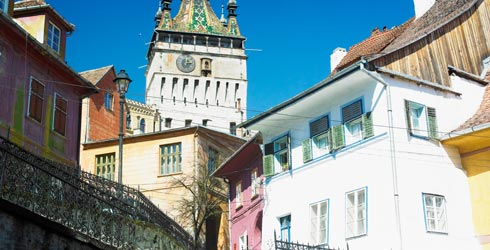
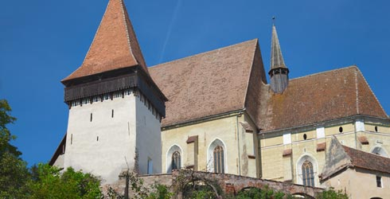
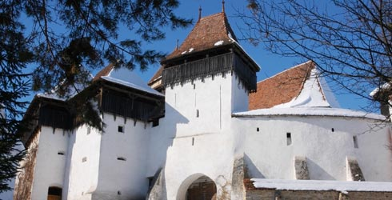
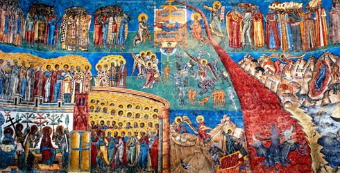
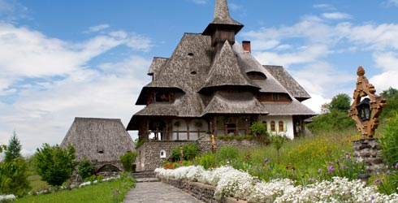

Turismul în România
Romania ofera o gama larga de destinatii turistice de interes general, dar si tematic. Turismul se concentraza in general asupra peisajelor naturale si a istoriei bogate. Este locul in care se pastreaza vie emotia intalnirii cu trecutul, calatorul avand posibilitatea sa descopere o lume de un farmec nemaiintalnit. Va oferim cateva variante de locuri unice si absolut impresionante pe care trebuie sa le vizitati in Romania.
Centrul istoric din Sighisoara
Cetatea Sighisoara este una din cele mai frumoase cetati medievale ale Ardealului. Vazuta de departe, silueta cetatii este dominata de Biserica din Deal, construita in 1345, dar si de Turnul cu Ceas, vechi de peste 500 de ani. Strazi pietruite, captusite de cladiri colorate si de o colectie de muzee. Casa in care a locuit Vlad Dracul si s-a nascut Vlad Tepes este un alt obiectiv de luat in seama, in acesta zona. Inca locuit si in zilele noastre, centrul istoric al Sighisoarei este cea mai reprezentativa asezare urbana din Transilvania.
Biserica fortificata de la Biertan
Ansamblul arhitectonic de la Biertan impresioneaza prin valoarea sa estetica si istorica. La doar 27 de km fata de Sighisoara se gaseste biserica intinsa pe aproximativ un hectar si care dateaza din secolul XV. Aici veti descoperi mai multe cladiri mai mici, inclusiv un mic bastion, care a fost folosit ca o ultima incercare pentru a descuraja cuplurile care vroiau sa divorteze. Metoda s-a aratat a fi un real succes, pentru ca in 400 de ani un singur cuplu a decis sa treaca printr-un divort.
Satul sasesc si biserica fortificata de la Viscri
La aproximativ 40 km de Sighisoara si 25 km de biserica fortificata de la Biertan se gaseste satul sasesc Viscri care gazduieste o cetate saseasca. Intre zidurile cetatii sta la adapost una dintre putinele biserici romanice din secolul XIII. Este construita din piatra de rau si lemn, iar pozitia inalta ii confera avantajul dominatiei asupra zonei. Satul Viscri este posesorul uneia dintre cele mai frumoase biserici fortificate sasesti care a fost inscrisa alaturi de alte 6, in Patrimoniul UNESCO.
Manastirile pictate din Bucovina
Regiunea istorica situata in nord-estul Romaniei este renumita pentru manastirile pictate, atat in exterior cat si in interior, fiind considerate cele mai fascinante realizari artistice din Europa. Subtile si cu numeroase detalii, zidurile manastirilor detin povesti biblice care contin portrete realiste de figuri umane si folosesc fundaluri care par sa semene din apropiere cu poalele Carpatilor. Multe dintre manastiri au fost construite de domnitorul Stefan cel Mare drept multumire adusa lui Dumnezeu pentru victoriile sale asupra turcilor.
Bisericile de lemn din Maramures
Maramures este un tinut cu multe sate rasfirate printre dealuri, adancite in obiceiuri locale si istorie. Printre dealurile de aici se ascund numeroase biserici vechi de lemn de o frumusete deosebita. Ele ilustreaza mestesugul prelucrarii lemnului si priceperea localnicilor. Opt din aceste biserici apartin patrimoniunui mondial, inclusiv Biserica Veche din Lemn, care dateaza din anul 1934 si Biserica din Surdesti, care are o turla disproportionat de mare. Este una din cele mai inalte structuri de lemn din Europa.